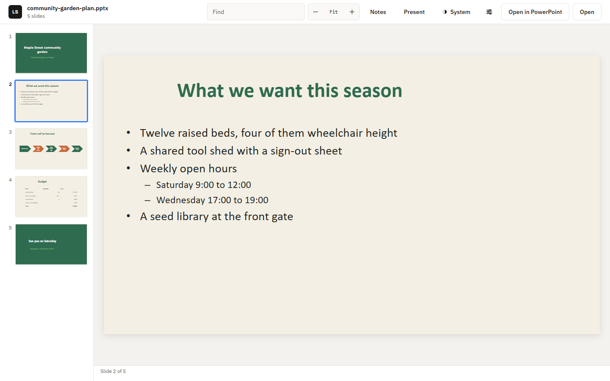

LeanSlides
Read and present .pptx files without an office suite.
Free and MIT licensed for Windows. Macros never run, and nothing a file links to is fetched.
Free and MIT licensed for Windows. Macros never run, and nothing a file links to is fetched.
